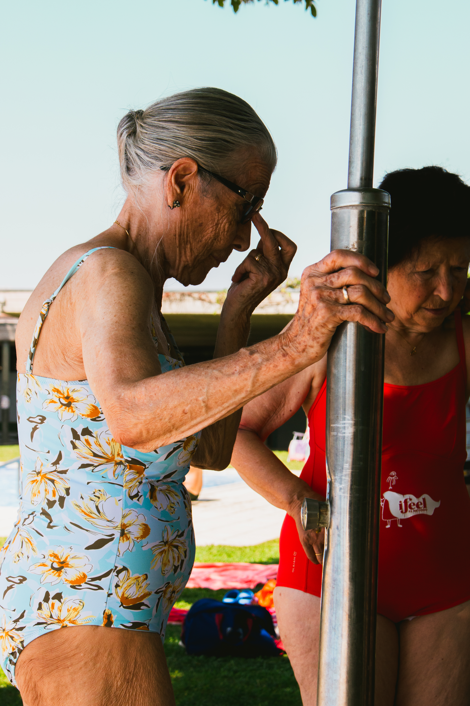
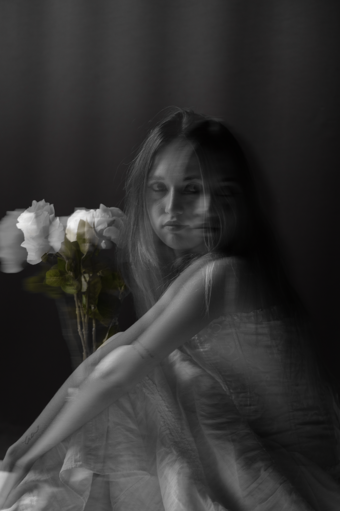
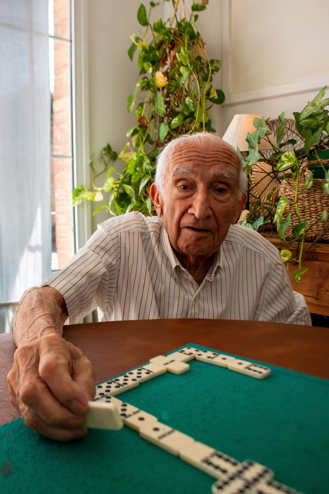
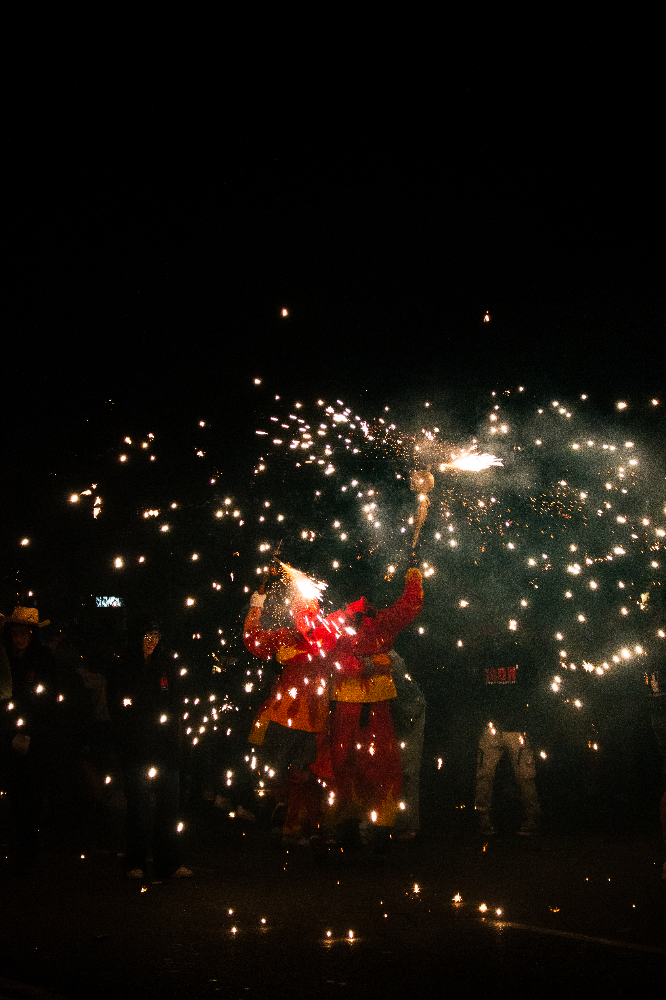
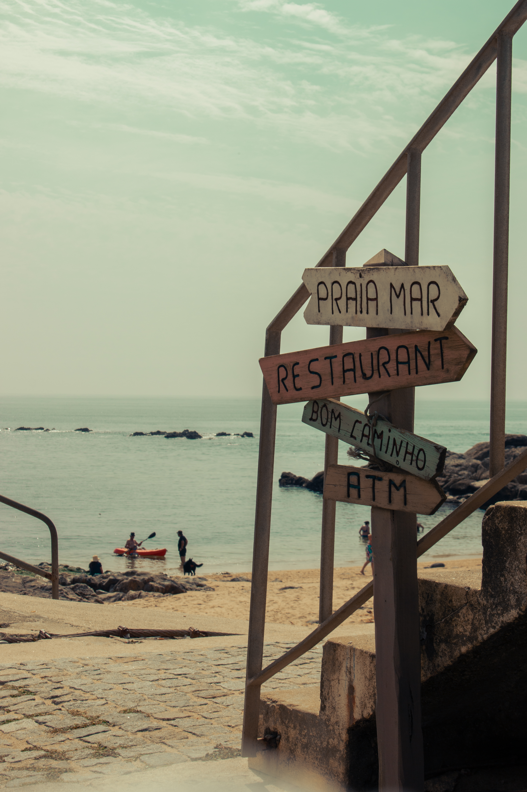
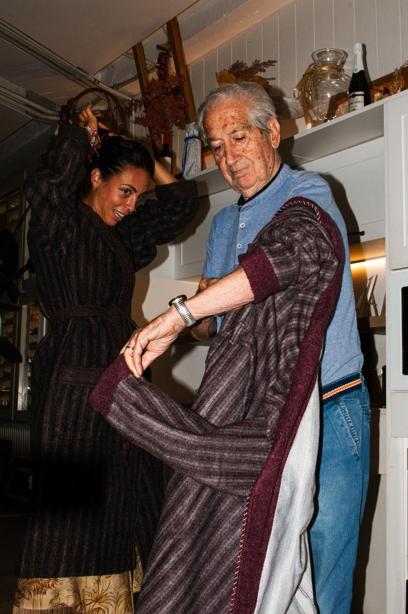

ArohaOnFilm





About


I'm Aroha
Lara
Based in Catalonia and available for regional and international projects. I craft visual experiences that blur the lines between film, photography, and graphic art. Currently completing my degree in Audiovisual Communication, I combine technical rigor on set with narrative editing and editorial design for freelance briefs.
Services I provide
- | 01 / VIDEO PRODUCTION |
- | 02 / PHOTOGRAPHY |
- | 03 / GRAPHIC DESIGN |

FROM ON-SET CINEMATOGRAPHY TO FINAL POST-PRODUCTION, I BUILD VISUAL NARRATIVES THAT CONNECT WITH AUDIENCES. WHETHER IT'S A COMMERCIAL BRAND SPOT, AN ARTISTIC MUSIC VIDEO, OR HIGH-AESTHETIC VERTICAL CONTENT FOR SOCIAL PLATFORMS, I BRIDGE TECHNICAL CAMERA WORK WITH NARRATIVE EDITING.
My Projects


